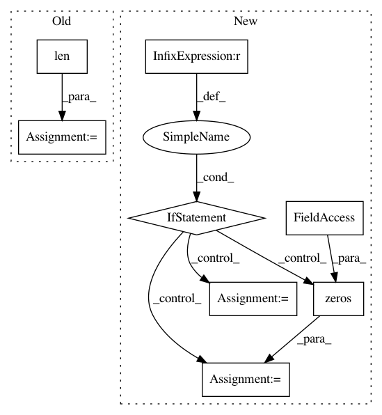

2c6ce0ebfa9537246878e8fb9144e0c879fca17d,cube/models/vocoder.py,BeeCoder,_predict_one,#BeeCoder#Any#Any#Any#,97
Before Change
output_hidden = []
for idx in range(self.upsample_count):
hidden = input_vector
for l_idx in range(len(self.layer_w)):
w = self.layer_w[l_idx][idx]
b = self.layer_b[l_idx][idx]
hidden = dy.tanh(w.expr(update=True) * hidden + b.expr(update=True))
output_hidden.append(hidden)
output = []
for w, b, hid in zip(self.softmax_w, self.softmax_b, output_hidden):
After Change
self.model.populate(output_base + ".network")
def _predict_one(self, mgc, last_fft=None, runtime=True):
if last_fft is None:
last_fft_real = np.zeros(self.FFT_SIZE)
last_fft_imag = np.zeros(self.FFT_SIZE)
else:
last_fft_real = np.real(last_fft)
last_fft_imag = np.imag(last_fft)
hidden = dy.concatenate([dy.inputVector(mgc), dy.inputVector(last_fft_real), dy.inputVector(last_fft_imag)])
for w, b in zip(self.hidden_w, self.hidden_b):
hidden = dy.tanh(w.expr(update=True) * hidden + b.expr(update=True))
In pattern: SUPERPATTERN
Frequency: 3
Non-data size: 8
Instances
Project Name: tiberiu44/TTS-Cube
Commit Name: 2c6ce0ebfa9537246878e8fb9144e0c879fca17d
Time: 2018-10-22
Author: tibi@racai.ro
File Name: cube/models/vocoder.py
Class Name: BeeCoder
Method Name: _predict_one
Project Name: asyml/texar
Commit Name: 77b1d527138ea2385284ed8eae8322c589065d3f
Time: 2018-04-26
Author: zhitinghu@gmail.com
File Name: texar/agents/seq_pg_agent.py
Class Name: SeqPGAgent
Method Name: _train_policy
Project Name: dpressel/mead-baseline
Commit Name: 1fd1fbb4b677f10d8e2181e7176daabad7327a72
Time: 2018-11-19
Author: blester125@users.noreply.github.com
File Name: python/baseline/pytorch/tagger/model.py
Class Name: TaggerModelBase
Method Name: create